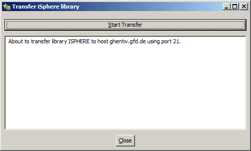
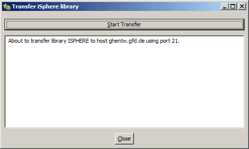

Although it is recommend to use the integrated upload feature to install the iSphere library on the host system, you can do it by hand, of course. Select the option that works best for you:
| Using the Integrated Upload Feature |
| Doing it By Hand |
| Using an i Project (no FTP) |


If you cannot use FTP to install the iSphere library, you may try to do it with an i Project from RDi or WDSCi. First you need to copy the iSphere project from the repository to your workspace. You may either connect to SourceForge and check out the project directly from the repository or download a snapshot of the repository to your PC and import the iSphere project from there.
Please refer to The iSphere Host Project to learn how to checkout the project from SourceForge using SVN.
For the latter option, go to the iSphere project home at SourceForge and click Code on the navigation bar at the top:

Then click Download Snapshot and save the zip file to your PC. The name of the zip file might be similar to isphere-code-1046-trunk.zip, where 1046 is the revision number that you can safely ignore.

Open RDi and switch to the i Projects perspective. Select File -> Import... -> General -> Existing Projects into Workspace and click Next. Then choose option Select archive file and click Browse to select the snapshot zip file. Click Deselect All and reselect project iSphere. Click Finish to import the project to your workspace.

Eventually build the iSphere library as described in Library Build.